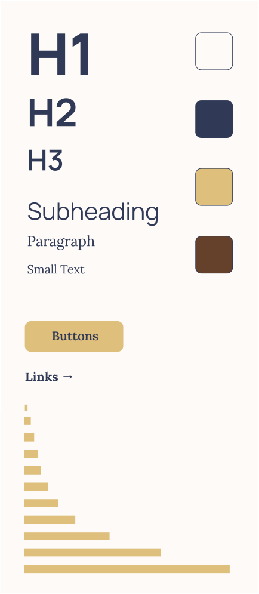

Tools: Wordpress Dates: May 2025 - Present
Freelance website design work for The Frank Wyso Foundation. I designed the layout in Figma and developed the site in Wordpress. The primary objective for this project was to showcase the artwork of Frank Wysochansky and organize content responsively and dynamically. I created pages for event catalogs and buying prints and archived all recognitions and mentions of the artist. Site to be live soon.